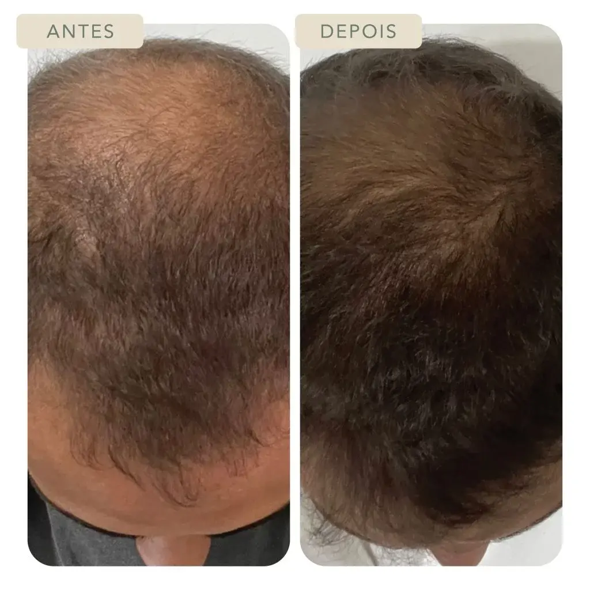

ANTES
PDF?LINK?FONTE?LOTE?POST...
Informação dispersa
Links perdidos, fontes difíceis de localizar e novidades espalhadas por vários canais.
INFORMAÇÃO, CIÊNCIA E TRANSPARÊNCIA.
Um espaço gratuito para acompanhar conteúdos sobre pesquisa molecular, publicações científicas, documentação de lotes e novidades da Aset Life.
É gratuito. O convite abre no WhatsApp; confirme tocando em “Entrar no grupo”.
Uma comunidade para reunir referências e atualizações em um só lugar — com mais contexto para acompanhar os assuntos.
Links perdidos, fontes difíceis de localizar e novidades espalhadas por vários canais.
Referências, documentação e comunicados organizados para acompanhar com mais facilidade.
Veja o que faz parte da experiência da Aset Life Community.
Materiais introdutórios e informações gerais sobre biologia molecular e temas relacionados à pesquisa.
Compartilhamento de artigos, referências e publicações para ampliar o contexto das conversas.
Informações institucionais sobre documentação analítica, identificação e rastreabilidade de lotes.
Comunicados, novidades da marca e informações sobre iniciativas da comunidade.
Relatos sobre atendimento, organização das informações e experiência na comunidade. Publicaremos apenas depoimentos reais, com autorização.

ADICIONE A FOTO 01[INSIRA AQUI UM DEPOIMENTO REAL SOBRE A EXPERIÊNCIA NA COMUNIDADE.]
[INSIRA AQUI UM DEPOIMENTO REAL SOBRE DOCUMENTAÇÃO, CONTEÚDO OU ATENDIMENTO.]
[INSIRA AQUI UM DEPOIMENTO REAL SOBRE A EXPERIÊNCIA NA COMUNIDADE.]
Os campos entre colchetes são espaços reservados para edição. Substitua-os por relatos verificáveis e autorizados antes de divulgar a página.
O convite oficial será aberto no WhatsApp.
Se necessário, escolha continuar no aplicativo.
Toque em “Entrar no grupo” para concluir.
Grupo gratuito · Entrada voluntária · Saia quando quiser.
Sim. O acesso ao grupo é gratuito. Basta aceitar o convite no WhatsApp.
Não. O botão abre o convite. Para concluir, toque em “Entrar no grupo” na tela do WhatsApp.
Haverá um sorteio de um brinde entre membros da comunidade. O brinde, período, condições e critérios serão comunicados no grupo. A participação não é automática apenas pelo clique no anúncio ou no convite.
Não. A comunidade é informativa e não oferece diagnóstico, prescrição, recomendação de dose ou orientação para uso humano ou veterinário.
Em grupos do WhatsApp, seu número pode ficar visível para outros participantes, conforme o funcionamento e as configurações de privacidade do aplicativo. Revise suas configurações antes de entrar.
Entre gratuitamente e acompanhe ciência, informação e novidades em um só lugar.
ENTRAR NO GRUPO AGORA↗Convite oficial do WhatsApp · Confirme “Entrar no grupo”